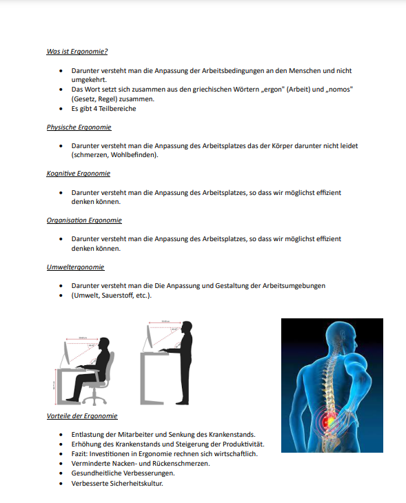
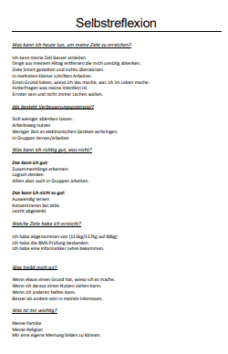

Selbstorganisation, finde deine Rolle im Team!

Finde deine Rolle im Team heraus, lerne, in einem Team zu arbeiten und setze deine Stärken möglichst effektiv ein.
Arbeiten in Gruppen:
Eine Gruppe besteht aus 3 bis 20 Personen, die über einen bestimmten Zeitraum zusammenarbeiten.
Sie haben gemeinsame Ziele und Aufgaben, die sie durch direkte oder indirekte Zusammenarbeit zu erreichen versuchen.
Gruppen entwickeln oft ein Wir-Gefühl.
In Gruppen gibt es oft Normen, an die man sich hält, und Rollen, die während der Arbeit durch die verschiedenen Charaktereigenschaften entstehen.
Normen in Gruppen sind Regeln, an die man sich hält, damit das Zusammenarbeiten gut funktioniert.
Die Normen können das Verhalten, die Vorstellungen zur Arbeit, die Arbeitsleistung, den Zusammenhalt und die Handlungsstandards beeinflussen und fördern.
Es gibt offizielle Normen oder Regeln, die festgelegt sind und von allen eingehalten werden müssen, wie beispielsweise das Personalreglement in einem Betrieb.
Es gibt jedoch auch inoffizielle Normen, an die man sich hält, obwohl sie nicht offiziell festgelegt sind, um die Zusammenarbeit zu fördern.
Fazit
Ich fand dieses Thema sehr wichtig, da wir in unserem späteren Arbeitsleben und in der Ausbildung oft in Gruppen arbeiten werden.
Es hat auch Spaß gemacht und es war interessant zu sehen, welcher Typ man in Gruppen ist.
Selbstführung, motiviere dich selbst!

Lerne, dich selbst zu motivieren, um bessere Leistungen zu erzielen und deinen Alltag effizienter zu planen.
Selbstführung, was ist das?
Selbstführung bedeutet, sich selbst zu steuern und zu lenken, sich selbst zu motivieren und Disziplin zu wahren, um das Beste aus dem Alltag zu machen.
Wer sich selbst führen kann, handelt eigenverantwortlich, setzt klare Ziele, arbeitet konsequent an ihnen, bleibt auf seinem Weg beharrlich und macht Fortschritte im Leben.
Eine ausgewogene Lebensführung wird gefördert, indem man sein Handeln überprüft und überdenkt, was dazu führt, dass die Person einen klareren Weg hat und ihre Ziele einfacher erreicht.
- Selbstführung steigert die Effektivität und Leistung.
- Selbstführung stärkt die Selbstverantwortung.
- Selbstführung fördert die Selbstmotivation.
- Selbstführung bringt das Leben in eine Balance.
- Selbstführung ermöglicht Wohlbefinden.
- Selbstführung hilft eingefahrenen Muster und unbewusste Automatismen zu durchbrechen.
Selbstführung lernt man durch Selbstbeobachtung und das Überdenken des eigenen Handelns, durch strategische Zielsetzung, bei der man die SMART-Kriterien anwendet, durch positive Erinnerungshilfen, die einen an die Ziele erinnern, natürliche Belohnungen, die die Arbeit versüßen, Selbstreflexion, bei der man an dem arbeitet, was noch nicht optimal ist, und durch bewusst gesteuerte Entscheidungen, um keine Bedauern zu haben.
Selbstführung lernt man durch Selbstbeobachtung und das Überdenken des eigenen Handelns, durch strategische Zielsetzung, bei der man die SMART-Kriterien anwendet, durch positive Erinnerungshilfen, die einen an die Ziele erinnern, natürliche Belohnungen, die die Arbeit versüßen, Selbstreflexion, bei der man an dem arbeitet, was noch nicht optimal ist, und durch bewusst gesteuerte Entscheidungen, um keine Bedauern zu haben.
Fazit
Ich bin glücklich, dass wir uns damit beschäftigt haben, da es etwas sehr Wichtiges ist und man dadurch seinen Arbeits- und Schulalltag besser in den Griff bekommt.
Ich hatte Spaß bei der Arbeit, auch wenn es manchmal Probleme gab und ich nicht gerade der Schnellste war.